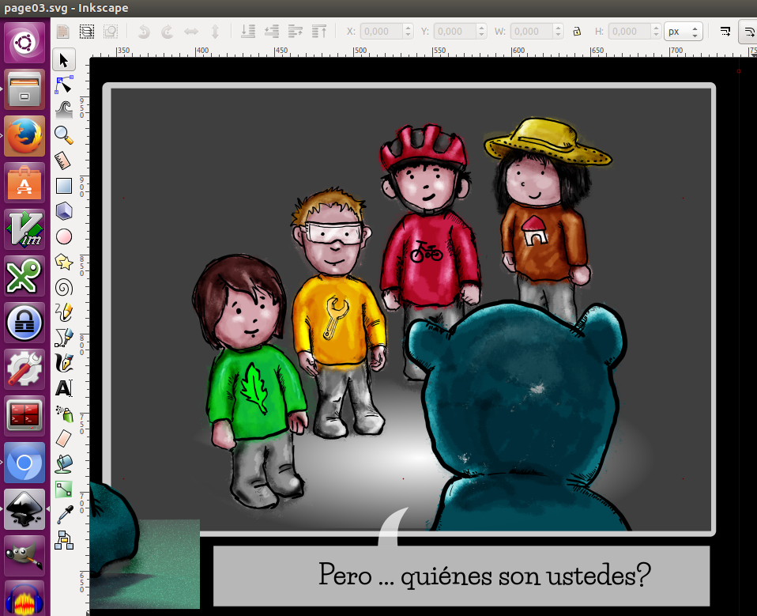
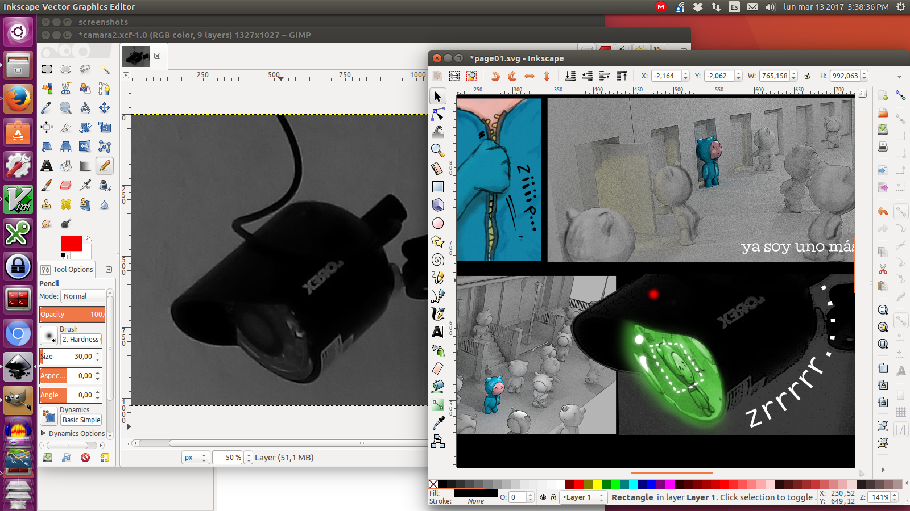
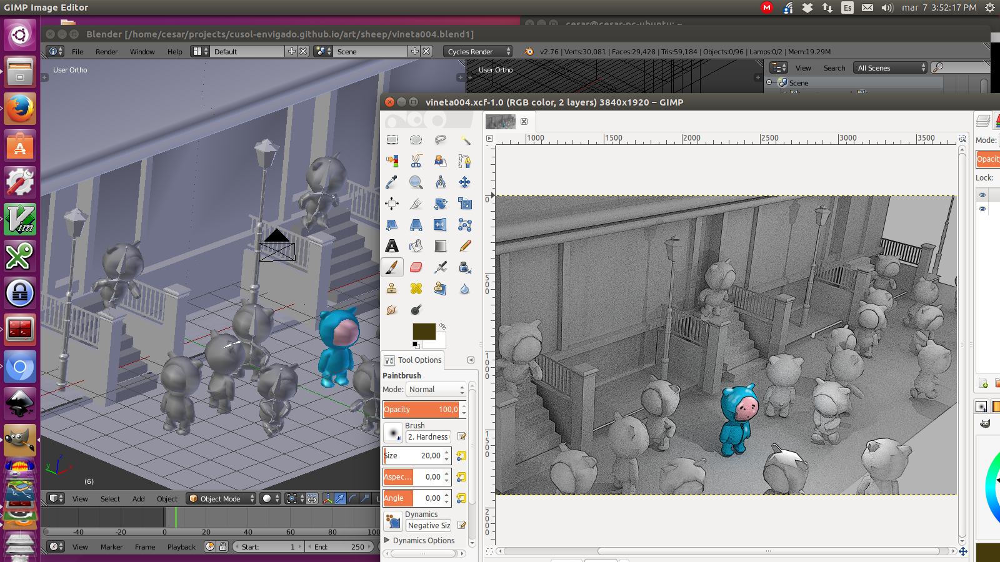
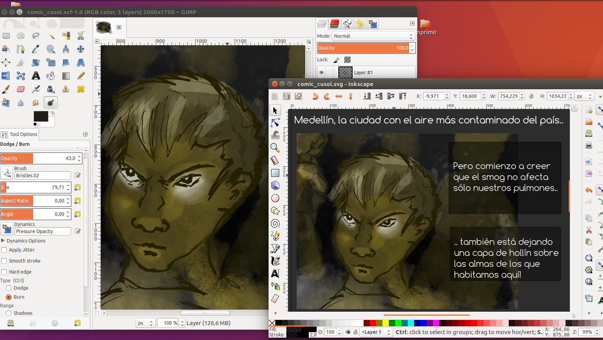

La Comunidad
Comunidad abierta a todas las personas, sin importar su edad, nivel formativo ni socio económico. No tenemos ánimo de lucro.
Nuestro objetivo es enseñar y divulgar la filosofía del software libre como una alternativa diferente para relacionarnos con la tecnología: con una óptica social que busca que todos nos apropiemos del conocimiento y lo apliquemos para el bien común.
Qué hacemos?
Charlas y talleres
Realizamos talleres y charlas gratuitas donde explicamos por qué y cómo usar software libre es importante para la sociedad. Los temas son muy amplios: desarollo de videojuegos, animación, producción de video, herramientas de ofimática, seguridad digital, etc.
Consultorías
Ofrecemos consultorías gratuitas en seguridad informática y gestión documental a grupos de veeduría ciudadana, activismo y colectivos sin ánimo de lucro.
Cómo participar?
La Comunidad no es una entidad centralizada. Cualquier persona puede ser parte activa, proponer y participar.
Puedes participar de muchas formas:
- Ayudando a difundir las actividades de la Comunidad en redes sociales (reales y virtuales).
- Asistiendo a las charlas, talleres y otras actividades.
- Llevando invitados a las charlas.
- Proponiendo temas e ideas para nuevas charlas ó nuevos tipos de actividades.
- Dictando tu propia charla sobre un tema que sea de tu interés!
- Apoyando en el manejo de las redes sociales del grupo.
- Apoyando con el mantenimento del sitio web de la Comunidad (diseño gráfico, desarrollo web).
Contáctanos para saber más de ti! tu ayuda es muy importante!
Contáctanos
Próximas actividades
charla# 8: Taller Comics con software libre - FLISOL Medellín
Pues sí, esta vez salimos de la zona de Envigado pero por una muy buena razón: realizaremos este taller en el marco del FLISOL (Festival de Instalación de Software Libre) que se realizará en el Exploratorio del parque explora!
Además del taller en el que veremos como usar Linux, Gimp, Inkscape y Blender para crear comics, también presentaremos el Comic que hemos venido desarrollando en las sesiones anteriores.
Con este taller cerraremos el ciclo de Comics y nos prepararemos para nuevos temas.
No te lo pierdas!
Agrega este evento a tu calendario:
Google calendar:

vía Meetup: http://meetu.ps/386ywD
Actividades pasadas
charla# 7: Hagámos Comics con software libre (3)! Marzo 25-2017
Tercera sesión de la serie, retomaremos blender 3D para modelar nuevas escenas, explorando un poco los materiales de render, en vez de post-procesar en gimp como en la primera sesión.
charla# 6: Hagámos Comics con software libre (2)! Marzo 11-2017
Continuamos con la creación de viñetas para el Comic que queremos presentar en el FLISOL de abril.
Blender 3D, Gimp e Inkscape trabajando juntos para que liberes toda tu creatividad!
Agrega este evento a tu calendario:
Google calendar:
vía Meetup: http://meetu.ps/37zd5M
charla# 5: Hagámos Comics con software libre! Feb 25-2017
Usaremos la creación de Comics como excusa para explorar diferentes técnicas de expresión gráfica usando software libre: retoque fotográfico, dibujo digital, modelado 3d, dibujo vectorial.. trae tus ideas, bocetos, y muchas ganas de explorar y aprender en grupo.
no requiere experiencia previa, importante traer su propio portátil ojalá con algunas de las siguientes herramientas ya instaladas (si nó, llegar temprano para que ayudemos a instalarlas): gimp, krita, inkscape, blender3d.
los niños son más que bienvenidos!
escáneres y tabletas digitalizadoras también servirán.
Reunión# 1: planeación de la comunidad: febrero 16 2017
Esta reunión en modalidad virtual es para invitar a los miembros que quieran aportar ideas y participar de manera más activa en el grupo, para socializar mejor la filosofía de sofware libre y cómo puede beneficiar a la comunidad en la que vivimos.
los temas de la agenda son:
- identidad visual del grupo (logo)
- participación en el festival de software libre de medellín (en abril)
- integración con otros colectivos y grupos
- ideas para nuevos servicios, talleres y actividades
Charla# 4: Introducción a Blender3D (parte 2): febrero 11 2017
Introducción básica al programa de modelado y animación 3D Blender: Sábado 11 de febrero de 10 a 12 am, en la Escuela de Audio y Sonido de Colombia.
En la charla pasada vimos las generalidades de la herramienta, y como realizar un modelo low-poly usando técnicas básicas. alcanzamos a ponerle esqueleto (armature) para prepararlo para animación.
En esta oportunidad, veremos el mapeo de texturas (cómo colocarle "ropa" a nuestro modelo) usando una combinación de GIMP y Blender.
No se requieren conocimientos previos, recomendable traer portátil
Charla# 3: Introducción a Blender3D (parte 1): enero 28 2017
Introducción básica al programa de modelado y animación 3D Blender: Sábado 28 de enero de 10 a 12 am, en la Escuela de Audio y Sonido de Colombia.
Blender3D es una herramienta muy poderosa que incluye: modelado 3D, animación 3D, post-edición de video, tracking de cámaras para mezclar video real con objetos 3D, render fotorealístico.. incluso contiene su propio motor para crear videojuegos! Realizaremos una descripción básica de esas funcionalidades y nos enfocaremos en el modelado low-poly, usado en videojuegos.
No se requieren conocimientos previos, recomendable traer portátil
Charla# 2: Desarrollo de videojuegos con software libre (parte 2). dic 17 2016
El sábado 17 de diciembre a las 10 am, en el mismo salón de la Escuela de Audio y Sonido de Colombia en donde realizamos la primera charla, continuaremos con el tema de pintura digital en Gimp.
Recomendaciones: si te resulta posible, trae un portatil con Gimp instalado para que puedas seguir el taller. si tienes una idea de un personaje sencillo trae dibujos (fisicos o digitales) y los usaremos en la actividad.
La meta es escanear, limpiar y colorear las partes de un personaje en 2D. Si alcanza el tiempo, veremos como importar esas partes dentro de Blender para una tercera charla sobre animación.
Charla# 1: Desarrollo de videojuegos con software libre (parte 1). dic 10 2016